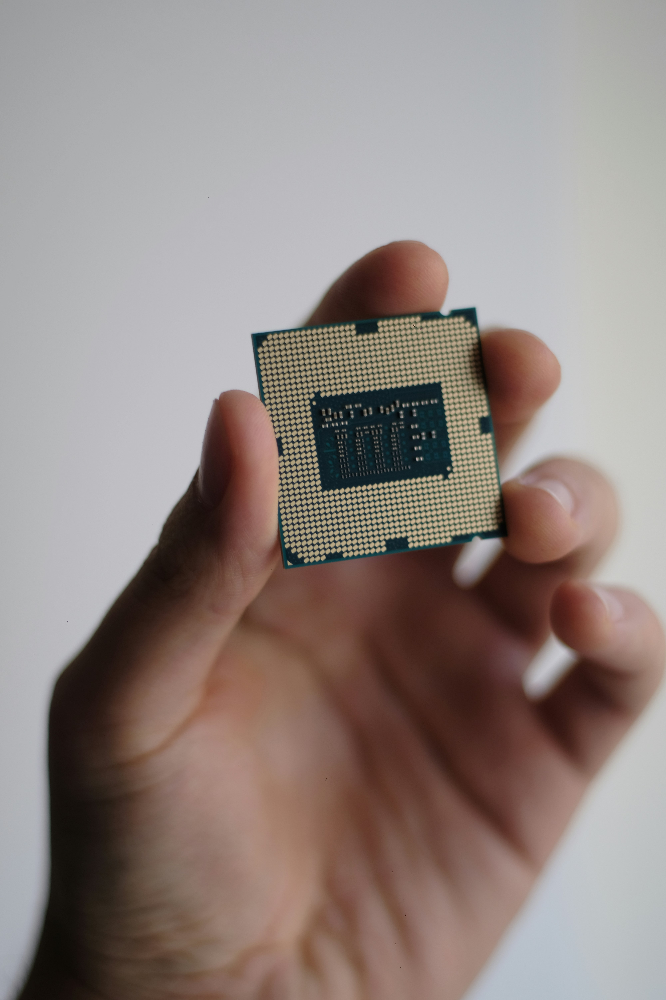
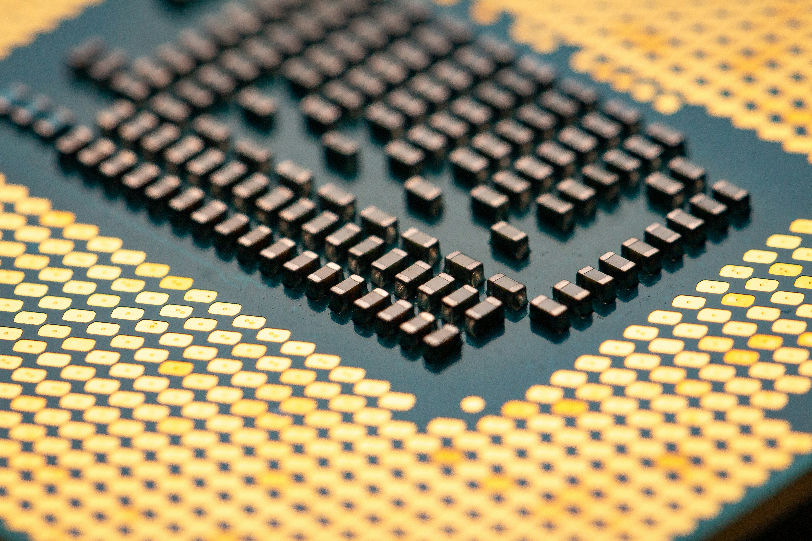
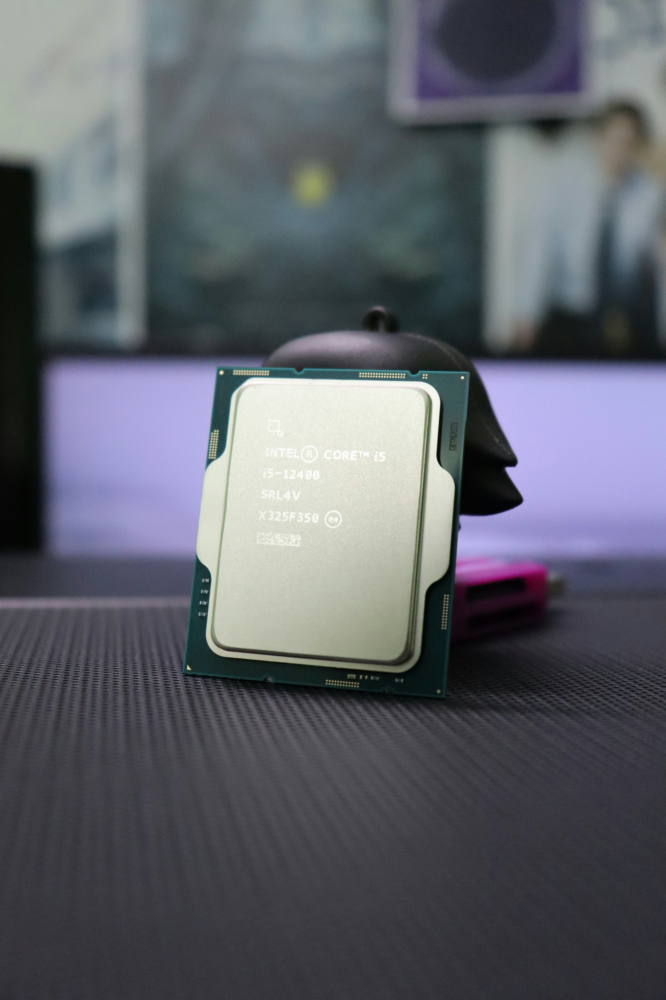
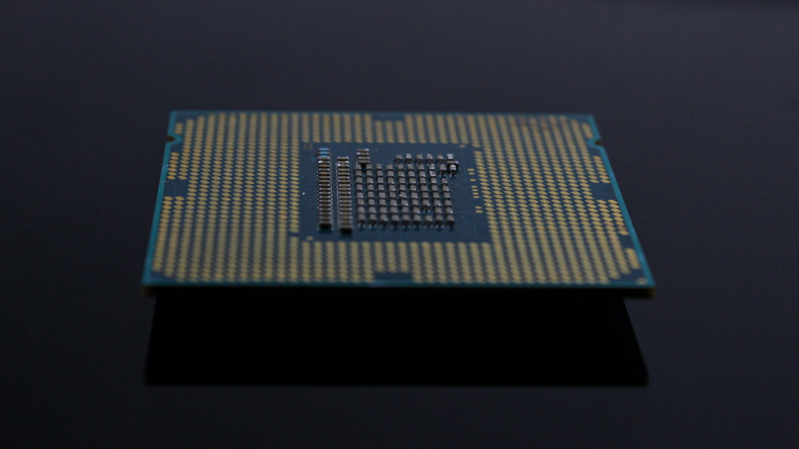

Intel Founded

Intel begins its historic journey in California, laying down the structural foundation for global digital transformation.
First Microprocessor

The introduction of the first commercially available single-chip processor, changing the brain of computer architectures.
8086 Processor

The birth of the landmark x86 computing architecture, scaling computing metrics exponentially across millions of units.
386 Processor

Intel introduces the 386 processor with 32-bit architecture, ushering in modern high performance multitasking.
Pentium Processor

Intel launches the Pentium processor, bringing stronger multimedia performance and faster personal computing to homes and businesses.
Core Processors

The Intel Core processor family emphasizes better performance per watt, helping shape more efficient laptops and desktops.